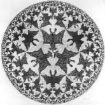

O outro lado das idéias
|
As convicções são inimigas mais perigosas da verdade do que as mentiras.
|
Nesta edição, apresentamos alguns textos de pessoas que têm feito viagens
ao mundo que está do outro lado do espelho e trouxeram algumas idéias que podem ser
implementadas neste mundo. Clique nos links para ler a continuação dos textos. |
|||
|

O que você vê? Anjos ou demônios? Educação em vista de um pensamento livreAlbert EinsteinNão basta ensinar ao homem uma especialidade. Porque se tornará assim uma máquina utilizável, mas não uma personalidade. É necessário que adquira um sentimento, um senso prático do que vale a pena ser empreendido, daquilo que é belo, do que é moralmente correto. A não ser assim, ele se assemelhará, com seus conhecimentos profissionais, mais a um cão ensinado... continua O Mundo e as sombras na parede da cavernaPlatão- E agora - disse eu - compara com a seguinte situação o estado de nossa alma com respeito à educação ou à falta desta. Imagina uma caverna subterrânea provida de uma vasta entrada aberta para a luz e que se estende ao largo de toda a caverna, e uns homens que lá dentro se acham desde meninos, amarrados pelas pernas e pelo pescoço de tal maneira que tenham de permanecer imóveis e olhar tão-só para a frente, pois as amarras não lhes permitem voltar a cabeça; ... continua. |
... o Curinga(...) mas tinham uma coisa em comum: nenhuma delas jamais perguntou quem era ou de onde tinham vindo. E por agirem assim, todas viviam em perfeita harmonia com a natureza à sua volta. Elas apenas viviam suas vidas dentro deste jardim exuberante e, como os animais, estavam íntima e despreocupadamente ligadas a ele... Até que chegou o Curinga. Ele se infiltrou no povoado como uma cobra venenosa. (...) Certa manhã, quando eu estava sentado à soleira da porta, ele apareceu de repente (...) e disse: "Mestre! Tem uma coisa que eu não entendo...". Na mesma hora chamou-se a atenção o fato de ele ter me tratado por "Mestre". Os outros anões sempre me tratavam por Frode. Além disso, nenhum dos anões começava uma conversa dizendo que não tinha endendido alguma coisa. Pois quando a gente entende que não entende alguma coisa é que a gente está prestes a entender tudo... Jostein Gaarder, "O Dia do Curinga" |
|||